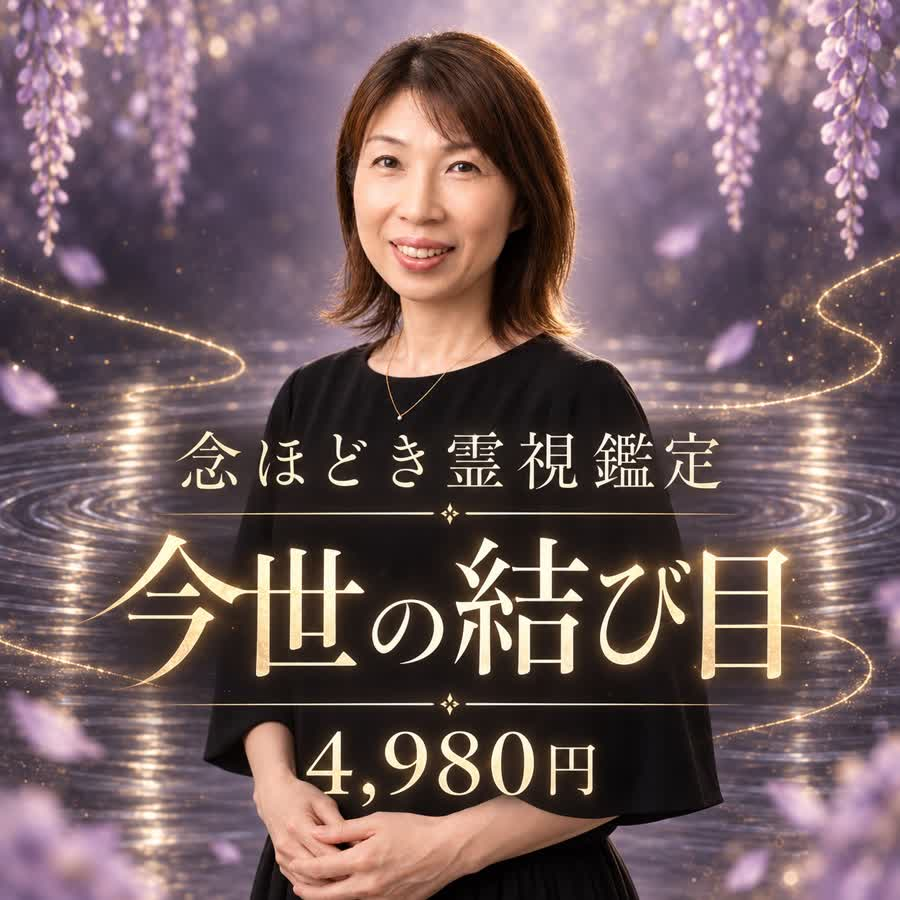
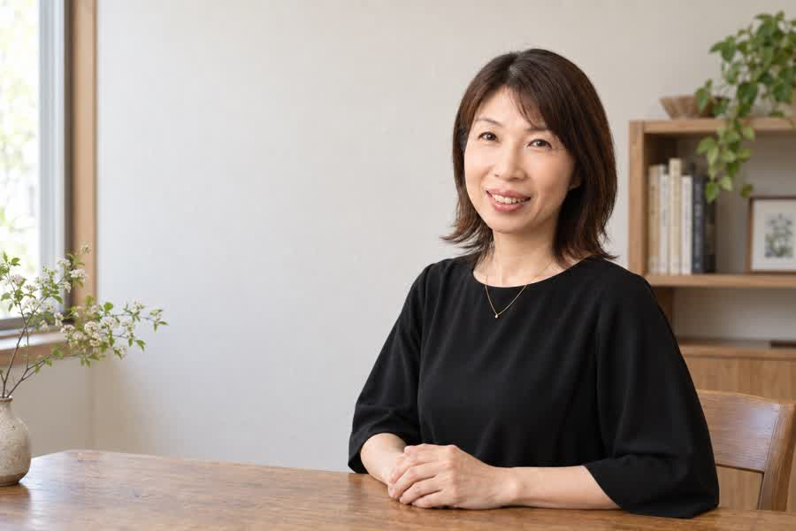
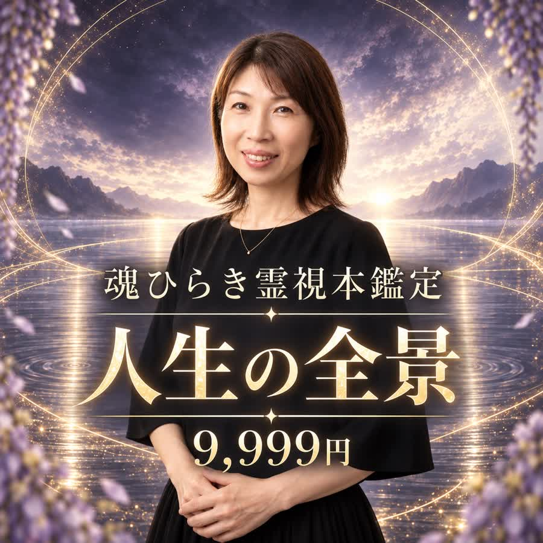

一つの悩みを、丁寧に
念ほどき霊視鑑定
今世の結び目
4,980円（税込）
今いちばん重い悩みを、
一つずつほどくところまで
家族・夫婦、仕事、お金、人間関係、恋愛、これからの生き方から、一つのテーマを選んでね。
- 今の状況と悩みを取り巻く流れ
- 心を重くしている念や感情の結び目
- 自分のものと周囲から受け取ったものの見分け
- ご縁のある存在から届く、今必要な言葉
- 流れを変えるために最初に動かしたい一点

WHAT YOU FELT
無料鑑定を読んだとき、胸の奥が少しざわついたり、理由もなく涙が出そうになったりしなかったかな。
「それ、誰にも話していないのに」
「本当は、ずっと分かっていた気がする」
そんなふうに手が止まった場所には、今のあなたが見過ごせなくなった結び目があるんだよ。
心が動いた場所は、
これからの流れが
動き始める場所。
偶然ではなく、
今だから届いた言葉なんだよ。
NOT TO FRIGHTEN YOU
生き霊や念が視えることはあるよ。でも、人生がうまくいかない理由を、何でも霊のせいにする鑑定はしません。
誰かを悪者にしたり、恐怖で決断を急がせたりするためでもないの。
私が届けたいのは、今のあなたが、自分の感覚と選ぶ力を取り戻すための言葉です。
ご縁のある霊魂や高次の存在を身体に降ろし、届いた言葉を受け取ります。
短い一言のこともあれば、忘れていた景色や記憶と一緒に届くこともあるよ。
都合よく変えず、でも怖さだけが残らないように。現実で何を整えればいいのかまで、優しくほどいて伝えます。
THE DIFFERENCE
無料鑑定でお伝えしたのは、今のあなたに強く出ている流れと、最初に気づいてほしいこと。
それだけでも、心が少し軽くなることはあるよね。
でも、軽くなったことと、
同じ悩みを繰り返さなくなることは、
同じではないの。
無料鑑定で視えたところ
ここから先が、本鑑定
無料鑑定は、本鑑定の違いを見る二つの鑑定から、今の自分に合う深さを選べます
結び目に気づくためのもの。
本鑑定は、その結び目を見つめ、
これから選ぶ道を整えるためのもの。
IF YOU HESITATE
「またお金を使って、何も変わらなかったらどうしよう」
「本当に視えているのかな」
「知ってしまうのが少し怖い」
そう思うのは、弱いからじゃないよ。今まで何度も期待して、そのたびに自分を責めてきたからだと思うの。
すぐに決めなくて大丈夫。でも、今届いている感覚を、また日常の奥へしまわなくてもいいんだよ。
高い方を選べばいいわけではありません。
今の自分に必要な深さで選んでね。
TWO READINGS
どちらも、一人ずつ丁寧に視ていくよ。
違うのは、どこまで広く深く視るかです。

一つの悩みを、丁寧に
4,980円（税込）
今いちばん重い悩みを、
一つずつほどくところまで
家族・夫婦、仕事、お金、人間関係、恋愛、これからの生き方から、一つのテーマを選んでね。

れいかが最も広く、深く視る鑑定
9,999円（税込）
いくつもの悩みに共通する根と、
人生全体の流れまで
家族、仕事、お金、人間関係など、別々に見える悩みに共通する根を読み解くよ。
高い方が正解、ということではないよ。
今は一つの悩みなら「今世の結び目」。
いくつもの悩みが重なっているなら「人生の全景」。
今のあなたに必要な深さで大丈夫だからね。
THE FLOW
申し込んだあとに何が起きるか、
先に伝えておくね。
今の自分に合う鑑定を選び、購入手続きをしてください。
決済時のお名前、購入した商品名、購入完了画面のスクリーンショットを送ってね。
現在抱えていることと、特に深く視てほしいことを伺います。うまくまとめなくて大丈夫だよ。
届いた言葉を受け取りながら、念や感情の結び目、魂の声、これからの流れを丁寧に読み解きます。
必要事項への回答後、3〜5日以内に文章でお届けします。
購入確認のご連絡がない場合、鑑定を開始できないことがあります。
VOICES
れいかの本鑑定を受けた方から届いたご感想を、個人が特定されない形でご紹介します。感じ方や変化には個人差があります。
申込フォームには「家族のことで疲れている」としか書いていませんでした。それなのに鑑定の中で、れいかさんから「薄い藤色の服を着た年配の女性が、台所の窓辺に立っているよ。『もう長女の役目を終えていい』と伝えている」と言われて、涙が出ました。
祖母がよく着ていた服も、実家の台所の景色も、そのままだったからです。祖母が亡くなってから、母やきょうだいのことは自分が何とかしなければと思ってきました。
「大切にすることと、全部を背負うことは違うよ」という言葉が、いちばん心に残っています。鑑定後、初めて妹に今の気持ちを話せました。
何もかも解決したわけではありませんが、私だけが頑張らなくてもいいのかもしれないと思えています。
正直、鑑定を受ける前は、「辞めたほうがいい」と言われるのも、「もう少し頑張って」と言われるのも怖かったです。
相談内容には仕事のことしか書かなかったのですが、鑑定の最初に「会社に着く前から左肩が重くなっているね。言いたいことを飲み込むたび、そこに同じ人の念が重なっているように視える」とありました。上司から連絡が来ると、いつも左肩が固くなることは誰にも話していませんでした。
降ろしてもらったのは、「答えを出す前に、まず自分の声を取り戻しなさい」という言葉でした。辞めるか耐えるかの二択しか見えていなかった私に、別の道を見せてもらった気がします。
鑑定後、希望する働き方を書き出し、社内異動について相談しました。まだ結論は出ていません。それでも、「ここに居続けるか、すぐ辞めるか」だけではないと思えたことで、行き止まりだった気持ちが少し動き始めています。
れいかさん、本当にありがとうございました🥲
夫のこと、仕事のこと、お金のことを、まとまりのないまま書いてしまったので、正直ちゃんと伝わるのかなと思っていました。。。
でも鑑定には、「悩みは別々に見えるけれど、根にあるのは“私さえ我慢すれば家族を守れる”という念だよ」と書かれていました。母が昔から「女が我慢すれば家はうまくいく」と言っていたことまで思い出して、鳥肌が立ちました。
そのあとに降りてきた女性の「暮らしを守るために、あなたまで消えなくていい」という言葉で、溜まってたものが溢れてずっと泣いてしまいました😭
鑑定結果を夫にも見せたところ、初めて落ち着いて家計の話ができました。まだ不安になる日もありますが、土曜の午前だけは自分のために使っています。小さなことだけど、「これは私が選んだ時間」と思えるのがうれしいです🤍
BEFORE YOU APPLY
生活に必要なお金を削らなければ申し込めない方。
鑑定に、人生の決定をすべて委ねたい方。
医療・法律・投資など、専門家の判断が必要な答えを求めている方。
今回は見送ってね。
暮らしを苦しくしてまで受けるものではないよ。無料鑑定の言葉を、必要なときに何度でも読み返してみて。
状況が整ったときに、
また来てくれたら大丈夫。
そのとき、私はここにいるよ。
QUESTIONS
家族、夫婦、親子、仕事、お金、人間関係、恋愛、これからの生き方などを相談できます。「今世の結び目」は一つのテーマ、「人生の全景」は複数の悩みに向いているよ。
怖がらせて動かす鑑定はしないよ。見ないままだと同じ悩みを繰り返しやすい部分は正直に伝えるけれど、誰かを悪者にしたり、未来を一つに決めつけたりはしません。
不安をあおって追加の商品を勧めることはありません。霊的な見立てだけで原因を決めつけず、今の状況や人間関係も一緒に整理するよ。
はっきり視てほしい悩みが一つなら「今世の結び目」。複数の悩みが絡まり、人生全体を見つめ直したいなら「人生の全景」が向いています。
必要事項への回答をいただいてから、3〜5日以内に公式LINEのメッセージでお届けします。
追加質問は商品には含まれていません。継続して相談したい方には、必要に応じて伴走サポートをご案内します。
FROM REIKA
家族のため。仕事のため。大切な誰かのため。
ここまで守ってきたものが、たくさんあると思う。
でも、これから先も、すべてを背負い続けなくていいんだよ。
鑑定は、あなたの代わりに人生を決めるものではありません。
絡まっているものを一つずつ分けて、自分で次の一歩を選ぶためのもの。
すべてを一度に変えなくて大丈夫。背負わなくていいものと、これから大切にしたいものを、一緒に見つけていこうね。
霊媒師 れいか
二つの本鑑定から選ぶ4,980円 / 9,999円・必要事項への回答後3〜5日以内